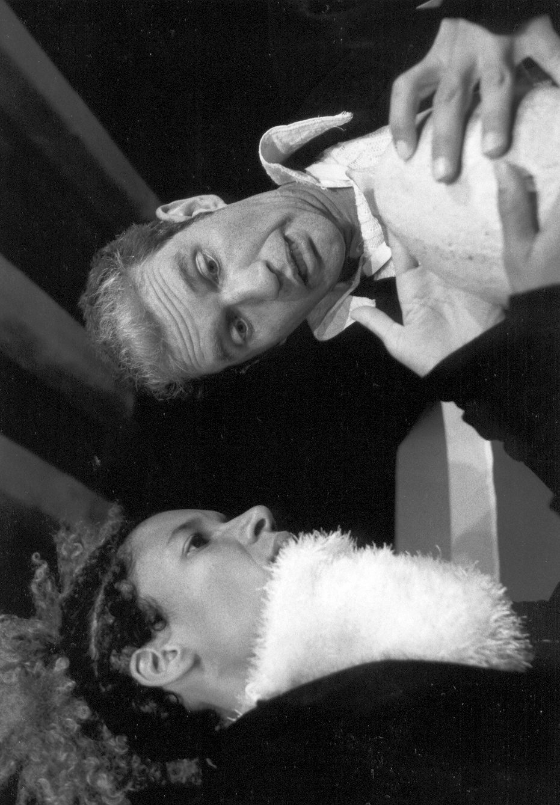
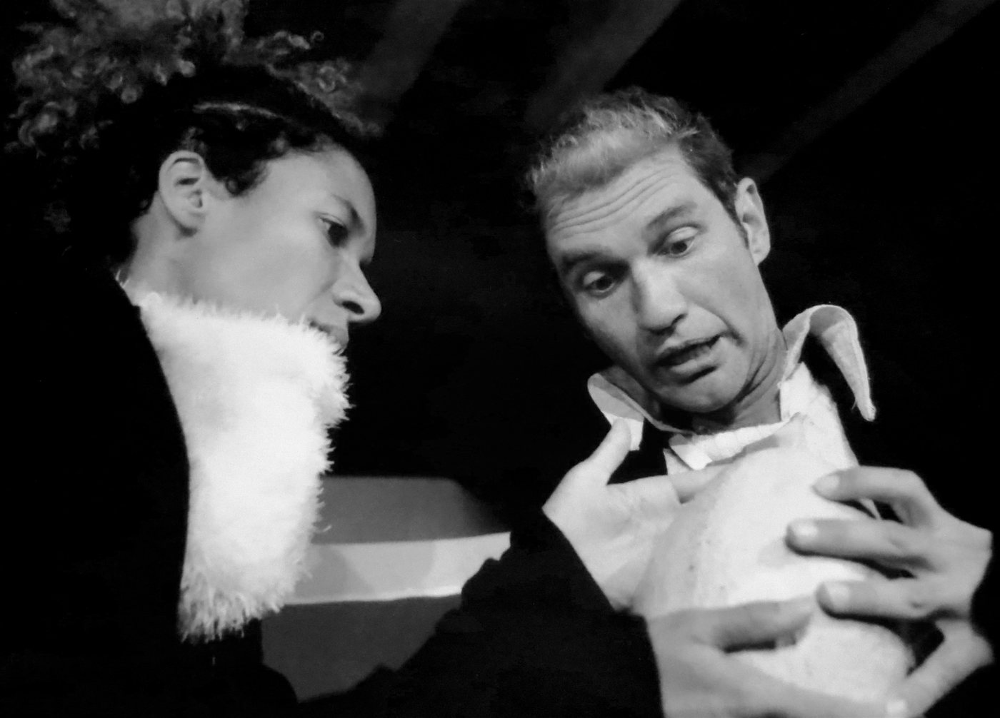
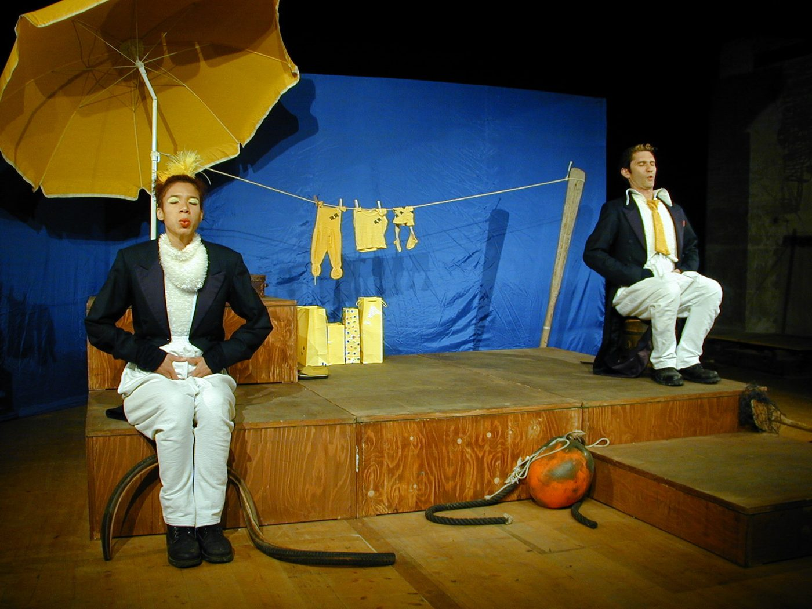
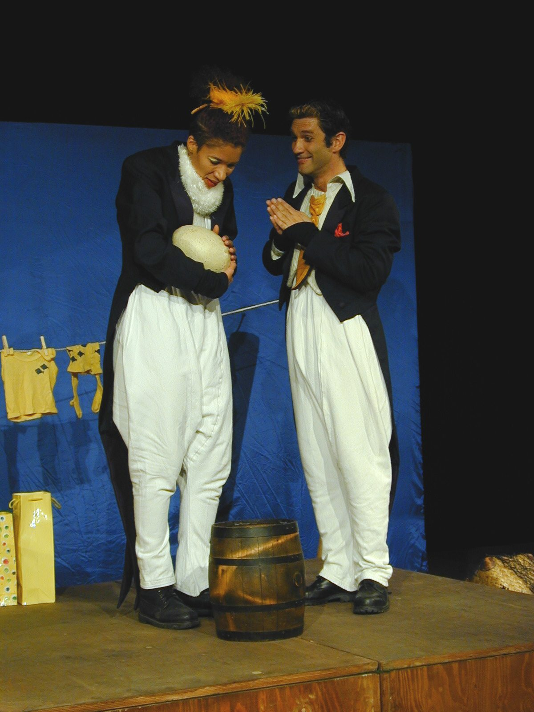
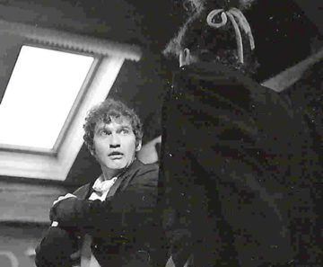

Ein Pinguinmann hat sich verliebt und schwimmt der Frau seiner Träume durch den ganzen Atlantik hinterher. Obwohl es noch gar nicht Frühling ist, beschliessen sie, gemeinsam ein Ei zu machen. Die werdenden Eltern malen sich hoffnungsvoll die Zukunft aus und bereiten sich voller Erwartung auf die Geburt vor. Doch aus dem wundersamen Ei, aus dem zuweilen sogar eine Stimme zu vernehmen ist, schlüpft kein Kind …
Das Stück der niederländischen Autorin Heleen Verburg wurde für diese Inszenierung auf Schweizer Mundart übersetzt. Es dauert fünfzig Minuten und ist – wie alle Stücke von N!NA – so konzipiert, dass es in Kleintheatern, Schulaulen, Kulturzentren oder Turnhallen gespielt werden kann.
«Mit dem menschenähnlichen Verhalten der Pinguine wird dem jugendlichen und erwachsenen Publikum auf poetische und witzige Art ein Spiegel vorgehalten.» Der Bund
«Ueli Blums Kunst, spannend Balance zwischen Poesie und Dramatik zu halten, Slapstick, Witz und Pointen organisch aus der Situation zu entwickeln, ist ebenso bewundernswert wie das gekonnte Körperspiel der Pinguine.» Wilhelmshavener Zeitung
- Stück
- Heleen Verburg (Rechte: Verlag der Autoren, Frankfurt a. M.)
- Regie
- Ueli Blum
- Spiel
- Sandra Moser, Reto Baumgartner
- Kostüme
- Marie-Eve Mérillou




